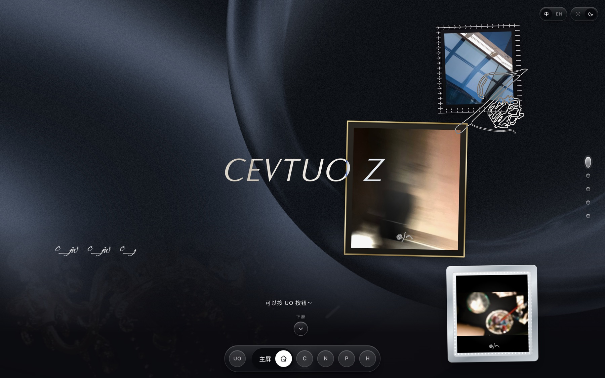
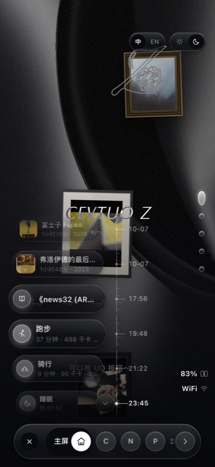
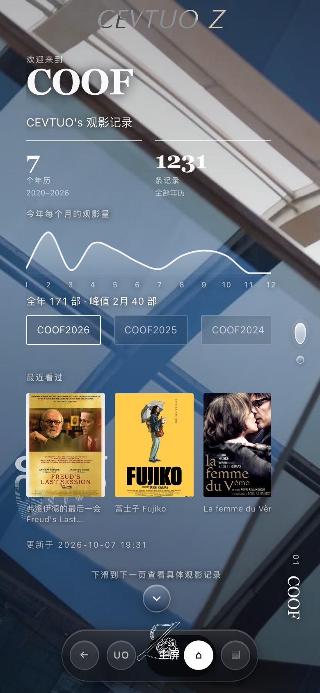
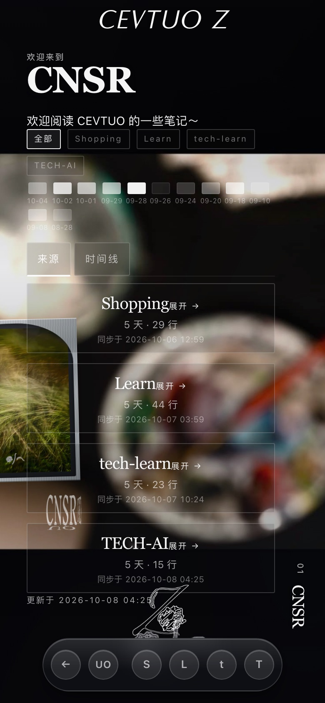
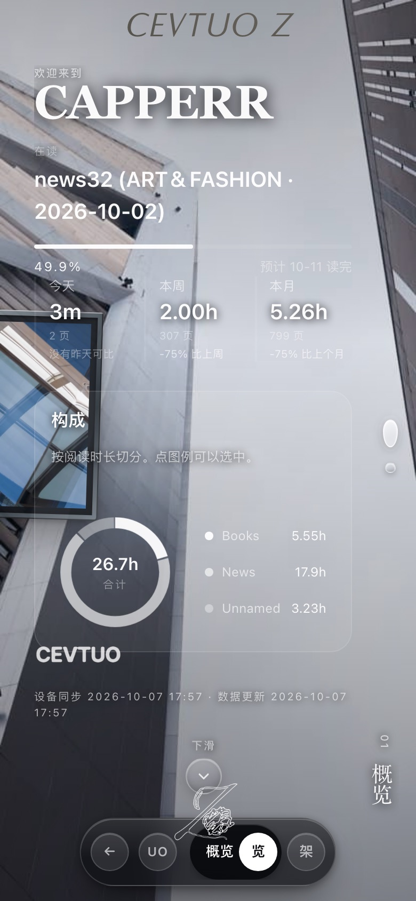
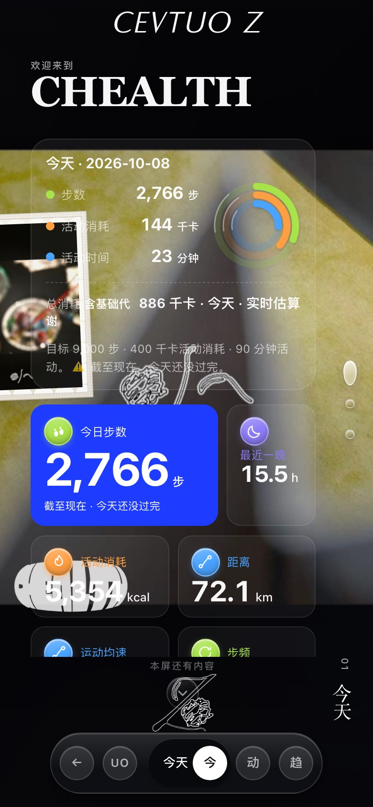
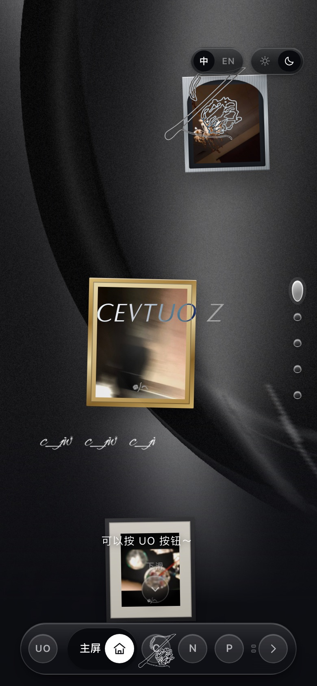

框架
Taro 4.0.9 + React 18.3
一套 TypeScript 源码，两个编译目标：
build:h5 出网页，build:weapp 出微信小程序。
组件、路由、样式都由 Taro 统一，平台差异集中在少数几处。
把散在 Notion、Kindle 和手机里的个人数据，收拢到一个站点上呈现。 四个品牌共用一套设计 token、一份玻璃材质、一份导航实现。
一个自用的个人数据站点，同时也是「同一份代码要同时活在浏览器和微信里」 的工程实践。
四个品牌（COOF / CNSR / CAPPERR / CHEALTH）是同一个应用里的四个页面，不是四个独立站点。 它们共用设计 token、玻璃材质定义和导航实现，改一处全站生效。
数据来源有四个：Notion 的两个库、Kindle 上的阅读统计、手机上的健康数据。 四条链路都以「源头 → 采集 → 落到仓库 → 浏览器读」的形状收口，中间没有一台常开的个人电脑。
观影、笔记、阅读三类数据是公开的。健康数据是唯一的例外 —— 它只保留最近 31 天，且在写进仓库之前用 AES-GCM 密封，因为那是唯一能指向一个具体身体的数据。
客户端、构建、服务端的完整拓扑。
图里红框是曾经用过、后来删掉的做法 —— 每一条都真实发生过， 并附一行它坏在哪。
点图可在新窗口打开原图（1560px）。窄屏下可左右滑动。
一套 TypeScript 源码，两个编译目标：
build:h5 出网页，build:weapp 出微信小程序。
组件、路由、样式都由 Taro 统一，平台差异集中在少数几处。
应用、数据契约、同步流水线、服务端在同一个仓库里：
apps/dashboard、packages/schema、
pipeline、services/ingest，共享同一份类型定义。
颜色、圆角、模糊强度全部是变量；卡片材质只有一处定义， 任何地方不许另写一份。验收看的是计算值在三页上是否真的相同， 而不是代码里有没有引用某个 mixin。
站点产物推到 gh-pages，GitHub Pages 与国内镜像
都从它取；数据由独立的发布桥写进同一个分支。两边内容因此天然同步，
不需要各推一次。
| 入口 | 地址 | 载体 | 说明 |
|---|---|---|---|
| 主站 | z.cevtuo.com | 阿里云镜像 | 已 ICP 备案，443，深圳节点。国内读者的主入口，首页 2.29s |
| 备份 | z.cevtuogrnd.com | GitHub Pages | 海外线路更快；国内首页约 7.8s |
| 应用页 | apps.cevtuogrnd.com | GitHub Pages | 本页所在的用户站，聚合各个项目 |
每条链路都标了体积、保留期，以及那一行被删掉的错误做法。
四张独立视图叠加在「保留与删除」规则之上；底部是手机端实际采集到的字段全集。
同步脚本按年历拉取 Notion 里的观影记录，配上豆瓣匹配到的海报， 按年写成分片 JSON。海报是下载后自存的 —— 豆瓣图床有防盗链，外链放进页面全是裂图。
四个数据库各自独立刷新（一次刷一个，四个一循环）， 所以每个来源存成自己的文件。合在一起的话，任何一个刷新都会让另外三个谎报新鲜度。
Kindle 上的 KOReader 插件在 KOReader 进程内部读统计库， 导出 JSON；接入服务把原始导出逐字存下来，再用 GitHub API 写进 gh-pages。 这条链路里没有任何一台 Mac。
手机 App 定时把三星健康同步过来的数据 POST 到接入服务； 服务端按日期合并、只保留最近 31 天，再用 AES-GCM 密封才写进仓库 —— 因为仓库是公开的。浏览器里解开它需要口令，内核是 PBKDF2 20 万次 + AES-GCM。
数据源以三星健康 SDK 为准，Health Connect 作补充 —— HC 的运动记录里力量类运动一律是同一个编号（#70）， `title` / `notes` / `segments` / `laps` / `device` 全是空的，光靠它分不出跳绳和卷腹。
| 分类 | 字段 |
|---|---|
| 活动 | 步数 · 距离 · 总消耗 · 活动消耗 · 爬楼层数 · 活动时间 · 步频 · 平均与峰值速度 |
| 睡眠 | 时长 · 入睡与醒来时刻 · 分期（清醒 / 浅睡 / 深睡 / REM / 未判定）· 睡眠分数 · 分期覆盖分钟 |
| 心脏 | 静息心率 · 平均心率 · 最大心率 · 心率变异性（HRV） |
| 体征 | 血氧 · 皮肤温度 · 体温 · 呼吸频率 · 能量分数 |
| 身体成分 | 体重 · 体脂率 · 骨骼肌量 · BMI · 基础代谢 |
| 目标 | 步数 · 活动消耗 · 活动时间 · 饮水（读自三星里你自己设的值，不是我们写死的） |
| 运动会话 | 类型 · 时长 · 距离 · 活动消耗 · 心率（均 / 峰 / 曲线）· 功率（均 / 峰 / 曲线）· 步频曲线 · 峰值速度与速度曲线 · 数据来源 · 器械次数 |
| 设备 | 电量 · 是否充电 · 网络类型 · 上报时刻 |
下面每一条都对应一段自己写的东西，不是组件库给的。
最左是返回键和一个 UO 圆盘，其余位置是当前页自己的分区：
点一下翻到那一屏，滚动时高亮跟着走。分区超过五个时第 6 个起折成一摞，
点开才摊平 —— 用宽度动画而不是 display 切换，否则那一帧是「切」过去的。
一行一枚胶囊（电影 / 阅读 / 运动 / 睡眠），右边是卡尺刻度； 上下都可折叠，默认贴着「现在」。每行按离视口中心的距离缩放淡出。 设备状态（电量 / 充电 / 网络）竖排贴在右侧。
「CEVTUO Z」用 mix-blend-mode: difference，
和身后内容逐像素混色 —— 压在浅背景上变深、深背景上变亮，
同一个字母的各处也可以不同。它和 text-shadow 不能共存，
字晕会被一起反色。
卡片材质只有一处声明；所有 backdrop-filter
都经由同一个函数，参数是相对 token 的倍率。迁移时按倍率折算，
模糊半径和迁移前相差不到 0.2px。
画框永远在内容之下（z-index: -1，
—— 0 会盖住正文，-2 会掉到壁纸底下）。
窄屏允许被屏幕边裁掉，但露出面积必须大于一半。背景用的也是这些画。
每页由几「屏」组成，滑动时整屏吸附过去。 底部条的分区点击和滑动手势走同一套 active 状态，不会互相打架。
右上角切换，所有中文位置换成英文 —— 包括底部条圆盘里那个字。 品牌名（COOF / CNSR…）本来就不翻。
两种主题都是正式版。凡随主题变的东西（颜色、底色、阴影、 透明度）两个主题各验一遍，判据是算出来的对比度， 不是「看起来还行」。
两个客户端：手机上的采集 App，和 Kindle 上的 KOReader 插件。
两者都不含任何密钥。连接凭据由你在设备上填，或在服务端配置。
KOReader 插件，把阅读统计导出成 JSON。 在 KOReader 进程内部读库 —— 统计库是 WAL 模式，从电脑上直接拷文件可能拿到旧快照。
同步 HTTP 2xx 即成功。cevtuo-capperr.koplugin 文件夹。koreader 目录在可见分区根目录。koreader/plugins/。历史数据不用搬，它在云上。
如果 token 也想换：在服务端
.env 的设备表里加一条新的，旧的那条删掉，然后把新 token 填进新手机。
阅读历史不会自动跟过去，
它在设备本地的 statistics.sqlite3 里。要搬就搬这个文件。
statistics.sqlite3 连同 -wal、
-shm 三个文件一起备份 —— 只拷主库很可能拿到旧快照。koreader/settings/ 下同样的位置。只换 Kindle 不搬历史也可以 —— 插件从零开始记，站上的数据保持已有的不变。
一台 2 vCPU / 769 MB 的深圳轻量实例，承担三件事。
把 gh-pages 整站铺一份到本机，
监听 :443 / :8082 / :8081。
国内访问首页 2.29s（热的 0.65s），GitHub Pages 是 7.8s。
TTFB 17–56ms。
没有 nginx，Bun 直接对外
Kindle 插件和手机 App 的 POST 终点，监听 :8789。
按日期合并、做去重与保留期裁剪，然后用 GitHub API 原子提交到
gh-pages。
systemd 常驻，单文件打包运行
用 acme.sh 走阿里云 DNS 自动签发与续期，
续期回调里重启镜像进程。备案域名 z.cevtuo.com 解析到这台机器。
两张证书分开存放，不要混用
公开仓库
cevtuocjw/CEVTUO-Z。
应用在 apps/dashboard，服务端在 services/ingest，
同步流水线在 pipeline，部署脚本在 scripts/。
全部在同一个仓库的 gh-pages 分支的
data/ 目录下。服务端机器上只有
/opt/cevtuo-ingest 的代码和日志 ——
删掉这台机器不会丢任何数据。
数据本身就在 GitHub 上，还分布在三处出口的缓存里。
真正需要单独备份的只有两样：服务端的 .env（口令与 token），
和 Kindle 的 statistics.sqlite3。
数据不在服务器上，所以换机器不动数据。按顺序走：
| # | 做什么 | 为什么 |
|---|---|---|
| 1 | 买新机器 —— 必须还是中国内地节点 | 备案只发给内地服务器；地域选定后不可更改 |
| 2 | 装 bun —— 拷真身，不要软链 | 软链会 203/EXEC 起不来 |
| 3 | bash scripts/deploy-ingest.sh |
部署接入服务 + systemd 单元 + .env（token 在这里） |
| 4 | bash scripts/deploy-mirror.sh |
从 gh-pages 铺整站，并重启镜像实例 |
| 5 | 用 acme.sh 重新签证书 | 证书跟着机器走；续期回调指向 scripts/restart-mirrors.sh |
| 6 | DNS 的 A 记录改到新 IP | 改完等解析生效 |
| 7 | 备案接入信息更新 | 仍用阿里云：在备案控制台更新接入信息即可，域名和主体信息不用重来。 换成别家云：需要做一次接入备案。这一步动手前先确认 |
| 8 | 验证四处指纹一致 | 本地 / gh-pages / 国内镜像 / z.cevtuo.com 的 js/app.<hash>.js |
deploy-pages.sh（构建并发布站点）、deploy-ingest.sh、
deploy-mirror.sh、restart-mirrors.sh、publish-data.mjs。
这几个脚本是成套的，换机器时按上面顺序跑即可。先立刻发本机那份（0.4–1ms），后台去上游拉最新写回。 45 秒的重验证间隔只决定「多久刷一次」，读者改完数据基本立刻能看到。
HTTPS 页面上 static/ 的图片走 CDN，
而 data/ 不改写 —— 数据的新鲜度不能交给 CDN 缓存。
最重的不是海报，是品牌 APNG（合计约 3.4 MB）。
用 IntersectionObserver 把它们推迟到快进视口时才下载，
首屏图片因此从 3.4 MB 降到约 2.0 MB。
每次构建先清 dist/，不留上一代的 hash chunk ——
否则负向对照会改到旧文件，静默变成「没做事」。
发布脚本默认会跑类型检查和构建。 此前它只负责拷贝产物，于是「发布成功」和「发布了一个旧版」在输出里长得一模一样。
真折射玻璃（SVG 位移图作 backdrop-filter）在 48 个面上 实测 4.7 fps；不铺时 60 fps。这处效果 13 倍的代价太大， 已从线上撤下。
数据在仓库里，总共约 52 MB；站点产物另算。
| 内容 | 体积 | 保留规则 |
|---|---|---|
| COOF 观影（含海报） | 约 45 MB | 全部年历，不设到期。海报是体积的主要来源 |
| CNSR 笔记 | 约 6.1 MB | 全部，不设到期 |
| CHEALTH 健康 | 741 KB（密文） | 最近 31 天，从「最新数据日期」往回算 |
| CAPPERR 阅读 | 约 48 KB | 全部，不设到期 |
站点产物 dist/ | 约 7.6 MB | 每次构建清空重建；其中品牌动图约 3.9 MB |
| gh-pages 分支整体 | 约 101 MB | — |
不是有一个定时删除任务。服务端每次合并之后
重新计算窗口，同时裁 days 和 sessions；
旧的一天自然落出窗口就不再被写出。收益是删除逻辑永远和写入逻辑一致，
不会出现「删了一半」的状态。
保留期从「最新数据日期」算，不按墙上时钟 —— 手机一周没同步也不会把数据清空。
接入服务对每个数据源只保存一个文件并覆盖写： 健康、阅读各一份，另加同步元信息。 没有数据库、没有日志表，所以磁盘占用是常数，不随时间增长。
真正的瓶颈是磁盘而不是 CPU —— 这台机器只有 769 MB 内存， 但服务端常驻约 50 MB。
不是设计稿，是 z.cevtuo.com 此刻的样子。







✕ 是展开状态下的 UO，「主屏」是当前分区，
C N P 折成一摞，箭头摊开其余的。主页开 UO 面板 → 逐个分区翻过去 → 四个品牌页 → 回主页。约 45 秒。
需要一个 bun 环境。
# 开发 bun run app:dev:h5 bun run app:dev:weapp # 构建 bun run app:build:h5 # → apps/dashboard/dist/ bun run app:build:weapp # → apps/dashboard/dist-weapp/ # 类型检查 —— 改过界面代码之后必须跑 bun run typecheck
本地预览：bash scripts/preview.sh（类型检查 → 构建 → 重铺预览 →
起一个带 SPA 回落的本地服务器）。
typecheck 过了不代表能打包（webpack 的解析和 SCSS 可能失败），
而打包过了也不代表能跑 —— 这个项目出现过三次「构建全绿、页面白屏」。# 构建（没有 gradlew，用系统 gradle） cd ~/cevtuo-health JAVA_HOME=~/android-toolchain/jdk/Contents/Home \ ~/android-toolchain/gradle/gradle-8.11.1/bin/gradle assembleRelease # 装到手机（保留数据） adb install -r app/build/outputs/apk/release/app-release.apk # 手动触发一次上报 —— ⚠️ 必须先 force-stop adb shell am force-stop com.cevtuo.health adb shell am start -n com.cevtuo.health/.MainActivity -e run sync # 只读诊断，不消耗 Health Connect 配额 adb shell dumpsys battery adb shell dumpsys jobscheduler | grep com.cevtuo.health
am start -e run X 对还活着的 Activity 只走 onNewIntent,
等于没点 —— 必须先 force-stop。
Health Connect 有 API 配额，会被人为的手动同步烧掉，而且是滚动窗口。
熄屏 Doze 下 JobScheduler 会把后台同步批量推迟，15 分钟会退化到约 1 小时。| 同特异型的 CSS 谁赢只看导入顺序 | 写了不生效且不报错，规则在别的文件里。要去产物里数那个选择器有几条规则。 |
| 断言全绿 ≠ 断言在测东西 | 一组断言全盯着同一个对象时，另一个对象坏了没人管。加断言先问：它怎么才会红。 |
| 「量不到」会被读成「产品坏了」 | 工具链的毛病会伪装成被测对象的毛病。同一个检查器两次跑结果不同，先修抖动再谈结论。 |
| 随主题变的东西，两个主题都要看 | 只跑一个主题时，另一个主题下的问题可以活很久。判据用算出来的对比度。 |
| 直连正常 ≠ 经代理正常 | 反向代理要把 Origin 转发过去，否则 CORS 头静默消失 —— 直连测永远看不出来。 |
| 同一件事两处实现，迟早对不上 | 睡眠时长一处按「入睡那天」归日、另一处按「醒来那天」， 于是连着两夜被加成一晚，10-07 报出 15.5 小时。已改为同一条规则。 |
| 写在样式表里 ≠ 浏览器认了它 | 一条 text-shadow: var(--x) 的计算值可以是 none。
注释描述的是意图，不是事实 —— 要验证的是计算值。 |